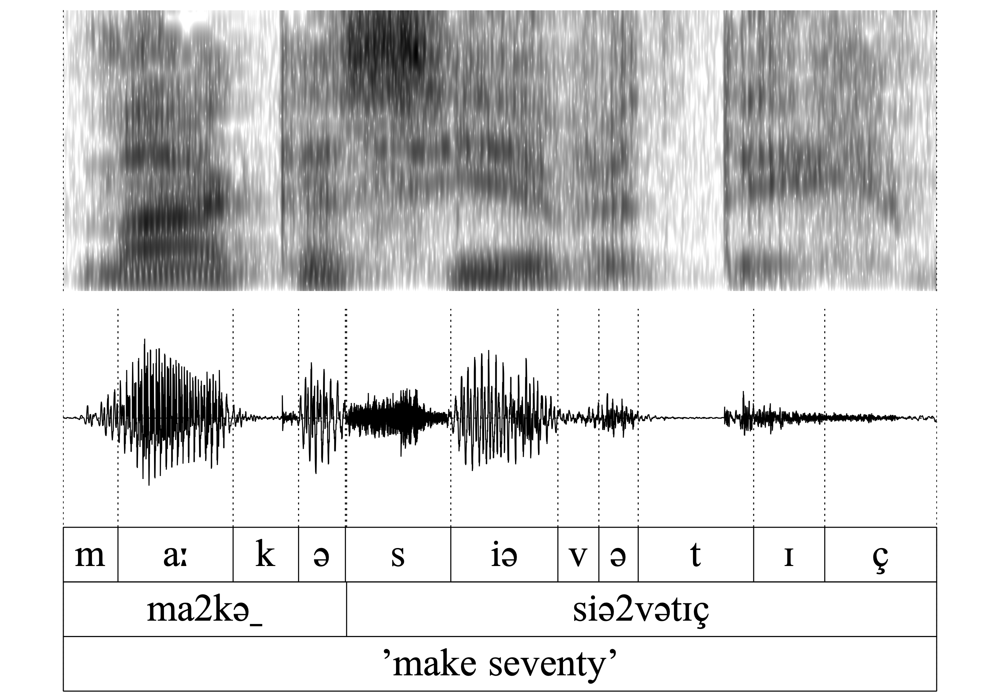
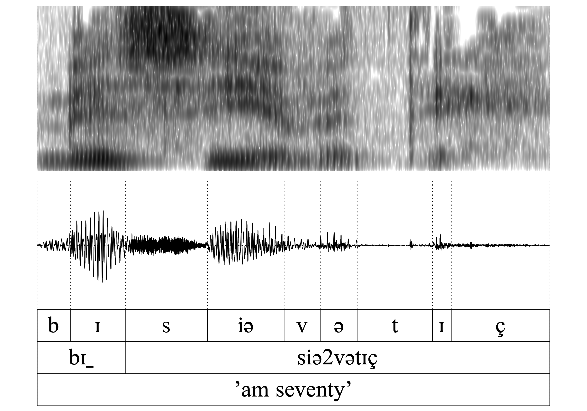
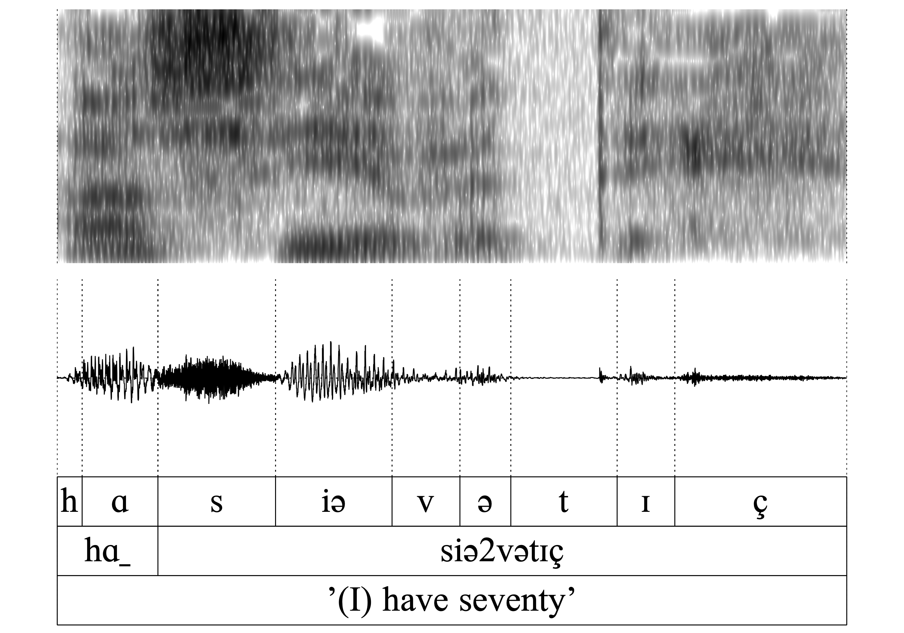
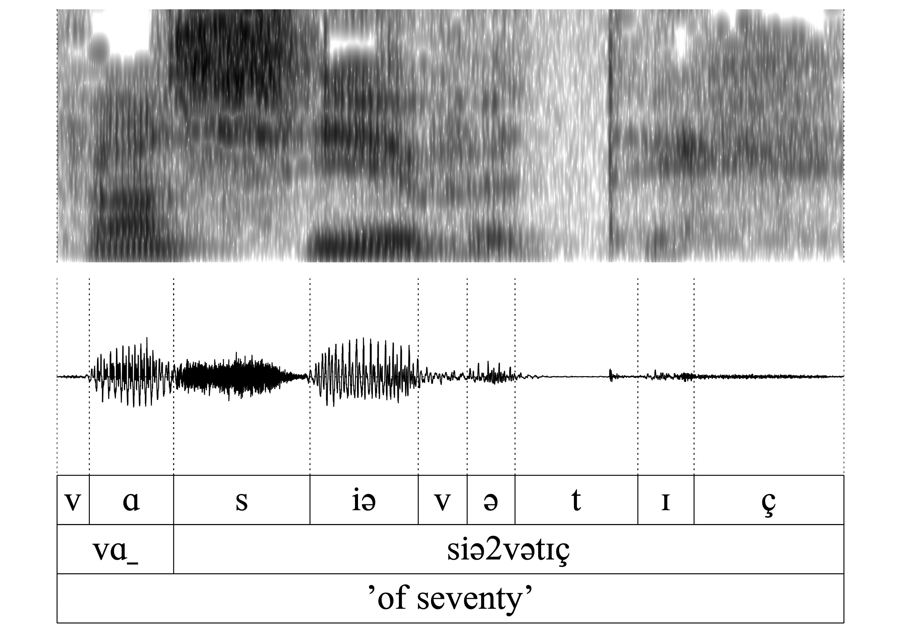
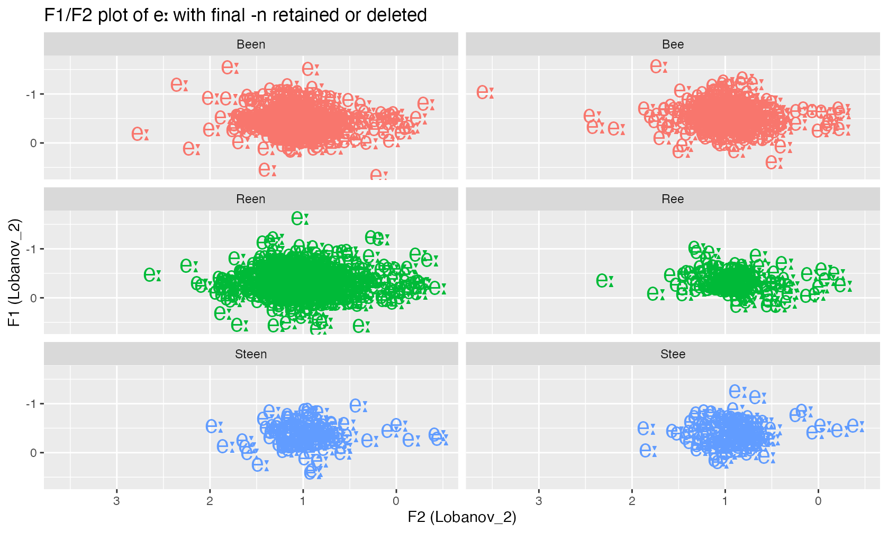

Word-final n deletion (WFnD) in Central Franconian (supplementary material)
Peter Gilles/Frans Hinskens
2025-01-31
1 Introduction
Being part of a complex prosodic phenomenon, word-final alveolar nasals are deleted in Central Franconian dialects according to a set of phonological characteristics of the word itself and the following context (‘Word-final n deletion’, WFnD). These intricacies and their discussion as an example of the ‘Life cycle of phonological processes’ are the topic of our article “The unfolding of word-final /n/ deletion in Central Franconian dialects. Where internal, geographical, and diachronic factors meet” (in prep.). In this article, we argue that after deletion the nasal is entirely deleted without a trace in the word (e.g. influencing the preceding vowel quality). Thus, WFnD is regarded as a phonetically abrupt, phonological process (as opposed to a phonetically continuous process).
To corroborate our claim, the following documentation is intended to present some examples and acoustic analysis for this aspect of WFnD. First audio examples for words from the dialect of Ubach-over-Worms (UoW) are presented alongside with their acoustic representations (segment-aligned waveform and spectrogram). In a second, acoustic analysis the vowel quality of the preceding vowel is investigated regarding eventual differences when the following nasal is deleted or retained.
2 Audio examples for the dialect of Ubach-over-Worms
In the UoW dialect, depending on the lexical word class, WFnD can apply either obligatory or variably, or is entirely blocked. The following examples serve as illustrations for these cases.
- WFnD is obligatory
The verb make ’to make’ has lost its final -n, which formerly was part of the infinitve ending -en.

- WFnD is blocked
By contract, in the verbal imperative re2əkən ‘calculate!’ the deletion is blocked because this -nforms part of the verb stem and (the infinitive is re2əkənən).

- WFnD is obligatory
Similar to 1., the nasal in a2 (< a2n ‘to’) is lost.

- WFnDis blocked
Similar to 1., WFnD is blocked in haː1n ‘rooster’ as the nasal is part of the stem of the noun.

- WFnD is variable
This and all the following instances allow a consistent investigation into the potential consequences of deletion, as the same word variably can undergo deletion or retention of the nasal (quasi as a minimal pair). In this example, the nasal in bɪn ‘(I) am’ is retained.

- WFnD is variable
Here the same word bɪn is undergoing deletion (bɪ_). According to the auditory control and comparison of the formant structure in the spetrogram, there is clearly no phonetic residual of the nasal and the quality of the preceding vowel is also fairly identical in bɪn and bɪ_. These observations support our claim that the nasal is in fact deleted without a trace.

The same is true for all of the following word-pairs 7.-14. (hɑn/hɑ_, vɑn/vɑ_, kʀɪn/kʀɪ, ʃtɔ̝n/ʃtɔ̝): The auditory and acoustic inspection confirms that the nasal is deleted without exercising a noticeable influence on the preceding vowel.
- WFnD is variable

- WFnD is variable

- WFnD is variable

- WFnD is variable

- WFnD is variable

- WFnD is variable

- WFnD is variable

- WFnD is variable

3 Acoustic analysis of vowel quality in WFnD in Luxembourgish
In order to investigate the potential impact of deletion on the preceding vowel, this following analysis will concentrate on a formant analysis of this vowel: If the non-presence of the nasal has an impact on the vowel quality of the preceding vowel, then one has to still to assume that WFnD is still (also) a phonetic process. By contrast, on the other hand, if the vowel quality remains unaffected after application of WFnD, then the deletion can actually by regarded as a phonetically abrupt, and thus a phonological process.
This analysis will be conducted for comparable words of Luxembourgish, where WFnD is variable after a long vowel (context {VVn1}): In words like Steen ‘stone’, Reen ‘rain’ and Been ‘leg’ the final nasal is variable deleted or retained. The vowel quality for [eː] thus will be measured for instances for Steen, Reen, Been and also for Stee_, Ree_, Bee_. These values then will also be compared with the vowel quality of [eː] in other words of Luxembourgish (e.g. Beem ‘trees’, See ‘saw’ etc.). The data comes from a large crowd-sourced corpus of Luxembourgish (Entringer et al. (2021) Gilles (2023)), which has been automatically transcribed with an ASR system (Gilles, Hosseini Kivanani, and Hillah (2023)). In the analysis, data from 1574 different speakers have been taken into account. After eliminating outliers (using the Mahalanobis method, cf. Stanley (2023)), 2575 instances of the relevant words with or without final -n, as well as 35627 other content words containing also the vowel [eː], are kept for the formant analysis.
| Word | n |
|---|---|
| Been | 728 |
| Bee | 514 |
| Reen | 932 |
| Ree | 142 |
| Steen | 127 |
| Stee | 132 |
| remaining content words with [eː] | 33053 |
| TOTAL | 35627 |
For every instance of [eː] the values of F1 and F2 have been measured automatically at the temporal midpoint. To be able to compare the formant values of speakers directly, the values have been normalised using the Lobanov method (to be precise, the Lobanov_2 normalisation proposed by Brand et al. (2021)).
The following F1/F2 plot shows the mean frequencies per speaker for the three target words either with -n retained (left) or deleted (right). From the pairwise visual inspection of the two clouds of realisations it is obvious that the vowel realisations are rather similar, if not identical.
However, in this visualisation it is not possible to identify the degree of similarity on the basis of the individual speaker. To further refine the analysis, the acoustic distance between the variants with and without -n, respectively, and the individual median values of the remaining eː-realisations are calculated using the Euclidian distance.
The following boxplots show the variation of all these distances, e.g., the first boxplot shows that the individual median Euclidian distances between the [eː] in Been and the median of all other [eː] lies around 0.3 units on the Lobanov scale. The variational range of the first and the second boxplot overlap to a large extent, indicating that the individual distances of the [eː] in Bee to the median of all other [eː] is similar.
 While the difference
between the words with and without final nasal is rather small
(reconverted to the frequency scale in the order of ~ 50 Hz), a pattern
regarding retention and deletion of the nasal emerges for the three
words: It seems that the average distance of the variant with deletion
is closer to the median of the remaining [eː] realisations and that thus
the variant with nasal is further away from this median.
While the difference
between the words with and without final nasal is rather small
(reconverted to the frequency scale in the order of ~ 50 Hz), a pattern
regarding retention and deletion of the nasal emerges for the three
words: It seems that the average distance of the variant with deletion
is closer to the median of the remaining [eː] realisations and that thus
the variant with nasal is further away from this median.
In order to test, it the distances for the two conditions are actually statistically different, a Welch two sample t-test has been conducted. The results in the following table confirm that there is actually no statistical significant difference between the distance of [eː] in Been or Bee, Reen or Ree, Steen or Stee compared to the other [eː] realisations.
| word pair | test statistic | p-value | confidence interval |
|---|---|---|---|
| Been ~ Bee | t(1099.98) = 1.55 | 0.122 | CI = [−0.005, 0.043] |
| Reen ~ Ree | t(253) = 0,715 | 0.475 | CI = [−0.0386, 0.0827] |
| Steen ~ Stee | t(183) = 1.5593 | 0.1206 | CI = [−0.0089, 0.07608] |
4 Conclusion
The aim of the auditory and acoustic analysis presented here should shed some light on the phonetic and phonological status of the word-final n-deletion in Central Franconian, illustrated for the varieties of Ubach-over-Worms and Luxembourg. The various analyses support our claim that the deletion of the final nasal is a phonetically abrupt process, - at least with regard to its potential influence on the preceding vowel: It was so far not possible to detect any clear evidence that the presence or absence of the final nasal is reflected systematically in the quality of the preceding vowel. Note that further studies are still needed to determine the amount of vowel nasalisation and if this nasalisation stays also after the deletion of the nasal.